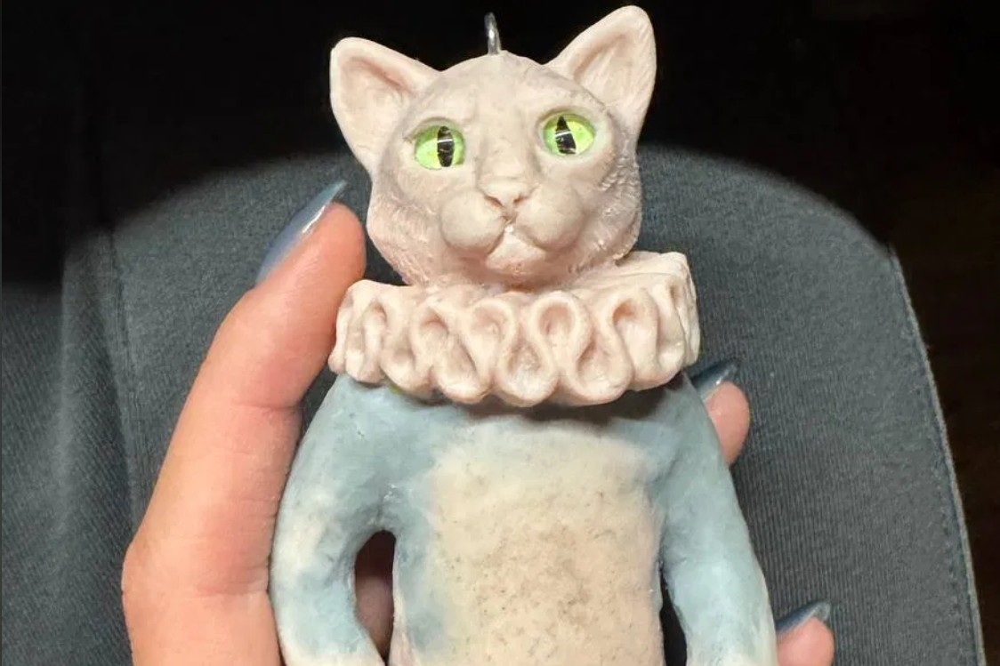
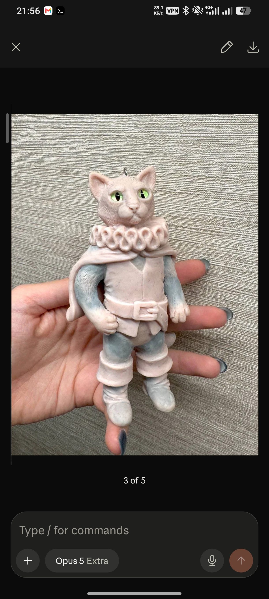
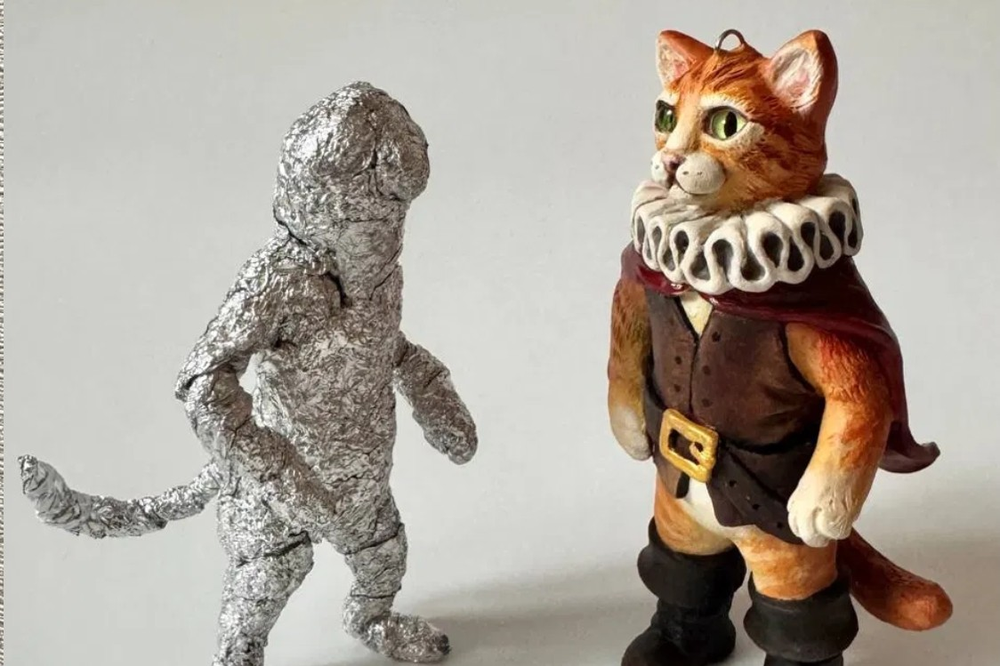

01
Каркас из фольги
Каждый Житель начинается с внутреннего скелета. Фольга формирует позу, держит баланс и вес. Это тот момент, когда фигурка впервые встаёт — ещё не живая, но уже узнаваемая.
Как создаются
Пять шагов, через которые проходит каждый Житель. Ручная работа без шаблонов, трафаретов и спешки — по шагам, пока работа сама не скажет, что готова.
Процесс
На примере Кота в сапогах — одного из Жителей, который прошёл весь путь от идеи до финального взгляда.
Каждый Житель начинается с внутреннего скелета. Фольга формирует позу, держит баланс и вес. Это тот момент, когда фигурка впервые встаёт — ещё не живая, но уже узнаваемая.
Полимерная глина ложится на каркас слой за слоем. Поверхность — не гладкая, а живая: пальцы Веры оставляют текстуру, которая потом читается в деталях. Здесь формируется объём и характер.


Когда объём застыл, начинается настоящая работа: морда, лапы, складки одежды, хвост. Каждая деталь лепится вручную, каждая — своя. Это тот этап, когда фигурка перестаёт быть глиной и становится собой.
Кисть, краски, матовая поверхность. Каждый мазок — вручную. Никаких трафаретов и печатей. Цвет подбирается под конкретного Жителя, под его мир и характер. Здесь рождается взгляд.


Когда последний штрих сделан, Вера откладывает кисть и смотрит на Жителя дольше, чем нужно. Только тогда работа считается завершённой. Кот в сапогах — завершён. Он ждёт своего Хранителя.
Факт о процессе
Рука рядом с фигуркой показывает масштаб и напоминает, что каждый Житель создаётся вручную — от каркаса и лепки до росписи и последнего штриха.
Напишите Вере — расскажет, какие работы сейчас в процессе и когда будет готов тот, который вы ищете.
Обсудить идею